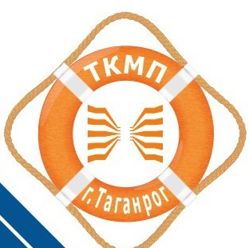
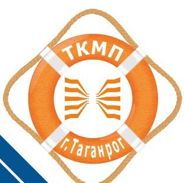

Особое право
Право на прием без вступительных испытаний имеют:
- победители и призеры заключительного этапа всероссийской олимпиады школьников (далее –победители и призеры всероссийской олимпиады), члены сборных команд Российской Федерации, участвовавших в международных олимпиадах по общеобразовательным предметам и сформированных в порядке, установленном федеральным органом исполнительной власти, осуществляющим функции по выработке государственной политики и нормативно-правовому регулированию в сфере образования (далее –члены сборных команд Российской Федерации), по специальностям и (или) направлениям подготовки, соответствующим профилю всероссийской олимпиады школьников или международной олимпиады, –в течение 4 лет, следующих за годом проведения соответствующей олимпиады
- победители и призеры IV этапа всеукраинских ученических олимпиад,члены сборных команд Украины, участвовавших в международных олимпиадахпо общеобразовательным предметам,по специальностям и (или) направлениям подготовки, соответствующим профилю всеукраинской ученической олимпиады или международной олимпиады,–в течение 4 лет, следующих за годомпроведения соответствующей олимпиады, если указанные победители, призерыи члены сборных команд относятся к числулиц, указанных в части 3.1 статьи 5 Федерального закона No84-ФЗ
- Право на приембез вступительных испытаний имеют:1) победители и призеры заключительного этапа всероссийской олимпиады школьников (далее –победители и призеры всероссийской олимпиады), члены сборных команд Российской Федерации, участвовавших в международных олимпиадах по общеобразовательным предметам и сформированных в порядке, установленном федеральным органом исполнительной власти, осуществляющим функции по выработке государственной политики и нормативно-правовому регулированию в сфере образования (далее –члены сборных команд Российской Федерации), по специальностям и (или) направлениям подготовки, соответствующим профилю всероссийской олимпиады школьников или международной олимпиады, –в течение 4 лет, следующих за годом проведения соответствующей олимпиады;2)победители и призеры IV этапа всеукраинских ученических олимпиад,члены сборных команд Украины, участвовавших в международных олимпиадахпо общеобразовательным предметам,по специальностям и (или) направлениям подготовки, соответствующим профилю всеукраинской ученической олимпиады или международной олимпиады,–в течение 4 лет, следующих за годомпроведения соответствующей олимпиады, если указанные победители, призерыи члены сборных команд относятся к числулиц, указанных в части 3.1 статьи 5 Федерального закона No84-ФЗ;3)чемпионы и призеры Олимпийских игр, Паралимпийских игри Сурдлимпийских игр, чемпионы мира, чемпионы Европы, лица, занявшие первоеместо на первенстве мира, первенстве Европы по видам спорта, включеннымв программы Олимпийских игр, Паралимпийских игр и Сурдлимпийских игр(далее –чемпионы (призеры) в области спорта), по специальностям и (или) направлениям подготовки в области физической культуры и спорта
Право на прием на обучение в пределах особой квоты имеют дети-инвалиды, инвалиды I и II групп, инвалиды с детства, инвалиды вследствие военной травмы или заболевания, полученных в период прохождения военной службы.Особая квота устанавливается Университетомв размере не менее чем 10% от объема контрольных цифр по каждой совокупности условий поступления на обучение по программам , программам
Преимущественное право зачисленияпри условии успешного прохождения вступительных испытаний и прочих равных условиях предоставляется лицам:
- дети-сироты и дети,оставшиеся без попечения родителей, а также лица из числа детей-сирот и детей, оставшихся без попечения родителей
- дети-инвалиды, инвалиды I и II групп
- граждане в возрасте до двадцати лет,имеющие только одного родителя –инвалида I группы, если среднедушевой доход семьи ниже величины прожиточного минимума, установленного в субъекте Российской Федерации по месту жительства указанных граждан
- граждане, которые подверглись воздействию радиациивследствие катастрофы на Чернобыльской АЭС и на которых распространяется действие Закона Российской Федерации от 15 мая 1991 г. No 1244-1 "О социальной защите граждан, подвергшихся воздействию радиации вследствие катастрофы на Чернобыльской АЭС"
- дети военнослужащих,погибших при исполнении ими обязанностей военной службы или умерших вследствие увечья (ранения, травмы, контузии) либо заболеваний, полученных ими при исполнении обязанностей военной службы, в том числе при участии в проведении контртеррористических операций и (или) иных мероприятий по борьбе с терроризмом
- дети умерших (погибших)Героев Советского Союза, Героев Российской Федерации и полных кавалеров ордена Славы
- дети сотрудников органов внутренних дел,Федеральной службы войск национальной гвардии Российской Федерации,учреждений и органов уголовно-исполнительной системы, федеральной противопожарной службы Государственной противопожарной службы, органов по контролю за оборотом наркотических средств и психотропных веществ, таможенных органов,Следственного комитета Российской Федерации,погибших (умерших) вследствие увечья или иного повреждения здоровья, полученных ими в связи с выполнением служебных обязанностей, либо вследствие заболевания, полученного ими в период прохождения службы в указанных учреждениях и органах, и дети, находившиеся на их иждивении
- дети прокурорских работников, погибших (умерших)вследствие увечья или иного повреждения здоровья, полученных ими в период прохождения службы в органах прокуратуры либо после увольнения вследствие причинения вреда здоровью в связи с их служебной деятельностью
- военнослужащие, которые проходят военную службу по контрактуи непрерывная продолжительность военной службы по контракту которых составляет не менее трех лет, а также граждане, прошедшие военную службу по призыву и поступающие на обучение по рекомендациям командиров, выдаваемым гражданам в порядке, установленном федеральным органом исполнительной власти, в котором федеральным законом предусмотрена военная служба
- граждане, проходившие в течение не менее трех лет военную службу по контрактув Вооруженных Силах Российской Федерации, других войсках, воинских формированиях и органах на воинских должностях и уволенные с военной службы по основаниям, предусмотренным подпунктами "б" -"г" пункта 1, подпунктом "а" пункта 2 и подпунктами "а" -"в" пункта 3 статьи 51 Федерального закона от 28 марта 1998 г. No 53-ФЗ "О воинской обязанности и военной службе"
- инвалиды войны, участники боевых действий,а также ветераны боевых действий из числа лиц, указанных в подпунктах 1-4 пункта 1 статьи 3 Федерального закона от 12 января 1995 г. No 5-ФЗ "О ветеранах
- граждане, непосредственно принимавшие участие в испытаниях ядерного оружия,боевых радиоактивных веществ в атмосфере, ядерного оружия под землей, в учениях с применением таких оружия и боевых радиоактивных веществ до даты фактического прекращения указанных испытаний и учений, непосредственные участники ликвидации радиационных аварий на ядерных установках надводных и подводных кораблей и других военных объектах, непосредственные участники проведения и обеспечения работ по сбору и захоронению радиоактивных веществ, а также непосредственные участники ликвидации последствий этих аварий (военнослужащие и лица из числа вольнонаемного состава Вооруженных Сил Российской Федерации, военнослужащие внутренних войск Министерствавнутренних дел Российской Федерации,военнослужащие и сотрудники Федеральной службы войск национальной гвардии Российской Федерации,лица, проходившие службу в железнодорожных войсках и других воинских формированиях, сотрудники органов внутренних дел Российской Федерации и федеральной противопожарной службы Государственной противопожарной службы)
- военнослужащие, сотрудники Федеральной службы войск национальной гвардии Российской Федерации,органов внутренних дел Российской Федерации, уголовно-исполнительной системы, федеральной противопожарной службы Государственной противопожарной службы, выполнявшие задачи в условиях вооруженного конфликта в Чеченской Республике и на прилегающих к ней территориях, отнесенных к зоне вооруженного конфликта, и указанные военнослужащие, выполняющие задачи в ходе контртеррористических операций на территории Северо-Кавказского региона.